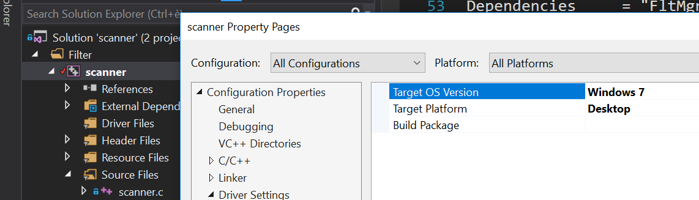
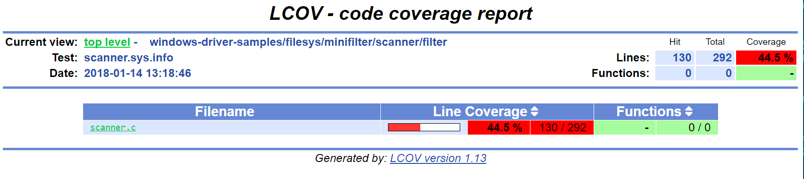
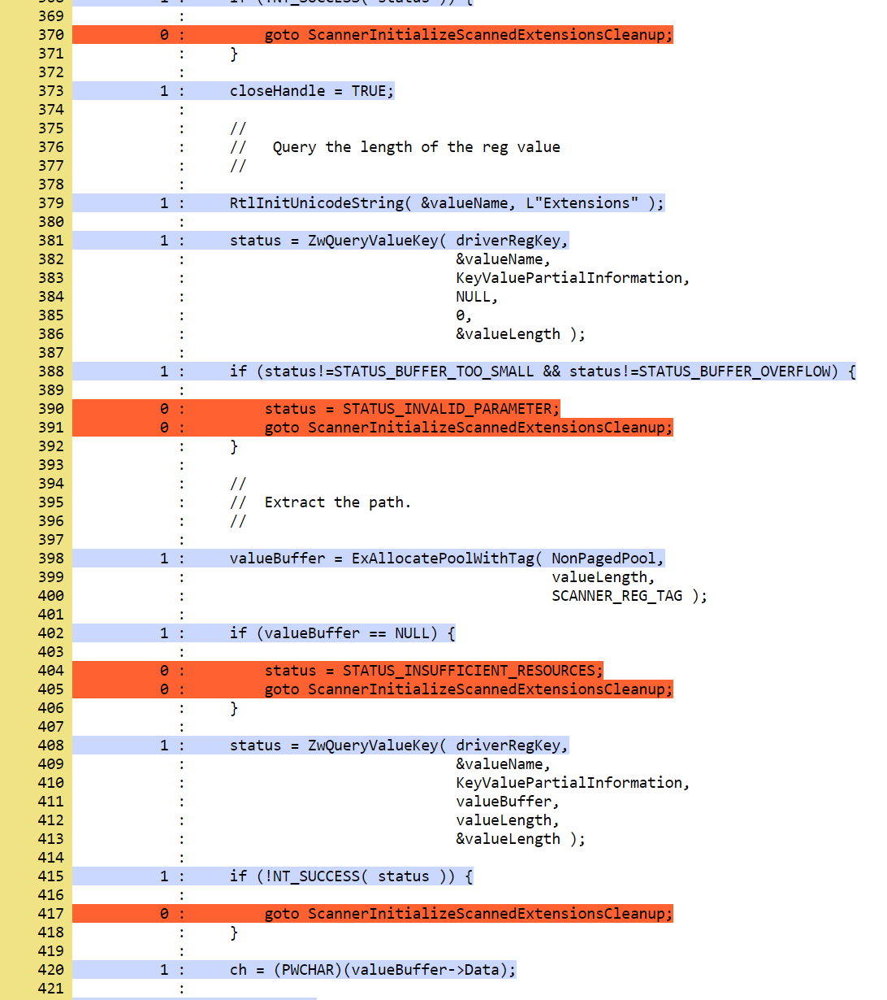
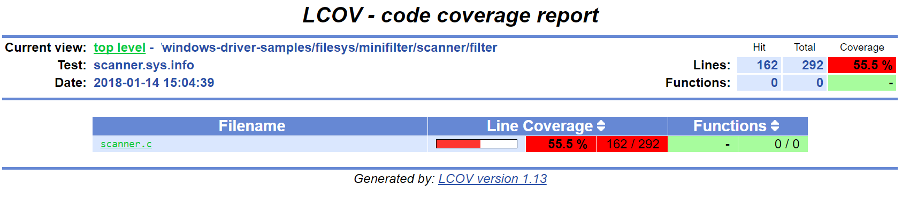
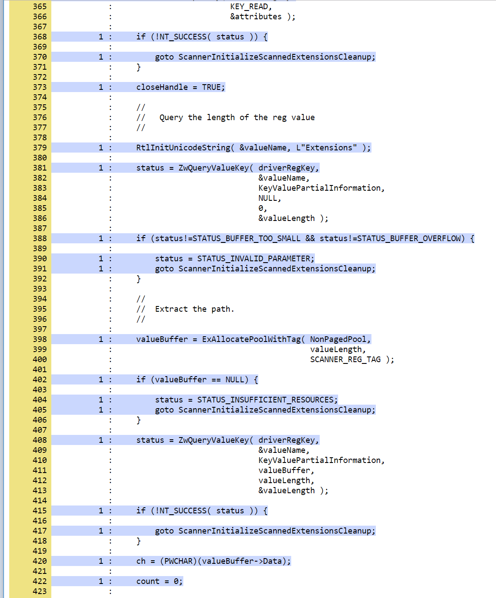

Testing Error Recovery Code in Windows Drivers with Multi-Path Fault Injection
Drivers often run in kernel mode, which makes them particularly susceptible to bringing down the entire system should they contain even the slightest bug. There are many approaches that attempt to solve or mitigate this problem, such as running drivers in user space, synthesizing correct-by-construction drivers, using formal verification, writing them in memory-safe languages, testing, etc.
Drivers (and software in general) often contain error recovery code in order to deal with system errors. For example, a driver could gracefully shut down if a memory allocation API returns a null pointer. Sometimes, recovering from the error involves complex steps. In the case of a driver, this may involve rolling back and deallocating all the internal state. This may be non-trivial, and unusual error scenarios may trigger untested execution paths, resulting in system crashes.
Error recovery code can be tested using fault injection. A fault injection tool typically intercepts API calls made by a driver, and instead of calling the original API, may decide to return an error code that the API call would have made had it encountered, say, a memory shortage. Whether or not to inject a fault is decided by a fault scenario. A fault scenario may focus on failing memory allocations, thread creation, various communication APIs, etc. Fault injection can also go beyond failing APIs, e.g., by corrupting memory with bit flips. There is a large body of literature that investigates most effective fault scenarios depending on the program under test.
In this tutorial, we will focus on testing error recovery code in Windows drivers using S2E and symbolic execution. A commonly used tool for fault injection in drivers is Microsoft Driver Verifier. This tools performs fault injection probabilistically and requires rerunning the driver over and over again in order to eventually cover all APIs. In contrast, S2E systematically tests every API call, allows custom fault scenarios, and does not require rerunning the tested driver many times in order to reach full coverage.
After completing this tutorial, you will know:
How to setup an S2E project to test Windows drivers
How to get line coverage for Windows drivers
How symbolic execution can be leveraged for quick and efficient fault injection
How to add new kernel APIs to the fault injection framework
Before starting, read the entire tutorial first in order to get a better overview of the various tasks and how they connect to each other.
Setting up S2E
For this tutorial, you will need:
a Linux environment with S2E installed and running
a Windows 7 guest image
a Windows environment to build the driver (see here for details on how to set it up)
up to 110GB of disk space. The Windows 7 image alone will take 25GB and the Windows 10 build VM up to 60 GB.
Please refer to Creating analysis projects with s2e-env for more details.
Here is a summary of the commands to run:
# Initialize the S2E environment
mkdir -p $(HOME)/s2e
s2e init $HOME/s2e/env
cd $HOME/s2e/env
# Build S2E binaries
s2e build
# Create a Windows 7 VM image to run the driver
# Get the ISO of the required image on MSDN
s2e image_build --iso-dir /path/to/isos windows-7sp1ent-x86_64
Setting up the Windows Environment
In order to build Windows drivers, you need the following:
A Windows environment (can be a VM)
Microsoft Visual Studio 2015 or 2017
Windows Driver Kit (the latest version supported by your Visual Studio version)
Please refer to the Microsoft’s documentation on how to set up and build drivers.
You will also need MSYS2 in order to run LCOV for code coverage:
Download the MSYS-GIT SDK from here
Launch
C:\git-sdk-32\msys2.exeand type the following commands:
# Install the environment
pacman -Syy gcc python2-setuptools
easy_install-2.7 pip virtualenv
# Check out the S2E repository. Guest tools are in the guest directory.
# They contain the s2e.sys guest driver that you will need to use later.
git clone https://github.com/S2E/s2e.git
# LCOV will be used to display code coverage
git clone https://github.com/linux-test-project/lcov
Please refer to the guest-tools readme
for more details.
Building the Sample Driver
This tutorial will use the scanner file system filter driver from the Windows Driver Kit samples repository. You may want to have a look at its source code and readme to see what it does. This is however not required to complete this tutorial.
In the MSYS environment, run:
git clone https://github.com/Microsoft/Windows-driver-samples.git
Open the filesys/miniFilter/scanner/scanner.sln solution in Visual Studio and do the following:
1. Change the driver target version to Windows 7 and platform to Desktop. Failing to do so will result in a kernel crash if the driver is loaded on Windows 7 or earlier. The following image shows where to find this setting. Make sure to select All Configurations and All Platforms first.
Select Debug mode and x64 architecture. A debug build will give better code coverage information.
Build the driver. You should have the following files:
scanner.inf
filter/x64/Debug/scanner.sys
user/x64/Debug/scanuser.exe
Copy these 3 files into your Linux environment where S2E can find them. It is important that the three files be in the same folder. You can modify the build settings of the Visual Studio project to put them in the same folder. You can also use a shared folder to avoid copying them to the VM.
Creating an S2E Driver Project
In your S2E environment folder, run the following command:
s2e new_project /path/to/scanner.inf
A successful run looks as follows:
(venv) user@linux:~/s2e/env$ s2e new_project /mnt/Windows-driver-samples/filesys/miniFilter/scanner/scanner.inf
INFO: [new_project] Detected Windows INF file, attempting to create device driver project...
INFO: [infparser] /mnt/Windows-driver-samples/filesys/miniFilter/scanner/scanner.inf
INFO: [infparser] class: ContentScreener catalog: scanner.cat
INFO: [new_project] Driver files:
INFO: [new_project] /mnt/Windows-driver-samples/filesys/miniFilter/scanner/scanner.sys
INFO: [new_project] /mnt/Windows-driver-samples/filesys/miniFilter/scanner/scanuser.exe
WARNING: [new_project] Catalog file /mnt/Windows-driver-samples/filesys/miniFilter/scanner/scanner.cat is missing
INFO: [new_project] No image was specified (-i option). Attempting to guess a suitable image for a x86_64 binary
WARNING: [new_project] Found windows-7sp1ent-x86_64, which looks suitable for this binary. Please use -i if you want to use another image
INFO: [new_project] Creating a symlink to /home/user/s2e/env/install/bin/guest-tools64
INFO: [new_project] Creating a symlink to /mnt/Windows-driver-samples/filesys/miniFilter/scanner/scanner.inf
INFO: [new_project] Creating a symlink to /home/user/s2e/env/images/windows-7sp1ent-x86_64/guestfs
INFO: [new_project] Creating launch script
INFO: [new_project] Creating S2E configuration
INFO: [new_project] Creating S2E bootstrap script
INFO: [new_project] Creating JSON description
This creates a folder projects/scanner that should contain the following files:
(venv) user@linux:~/s2e/env$ ls -l projects/scanner/
total 48
-rw-rw-r-- 1 user user 5472 Jan 13 22:00 bootstrap.sh
lrwxrwxrwx 1 user user 58 Jan 13 22:00 guestfs -> /home/user/s2e/env/images/windows-7sp1ent-x86_64/guestfs
lrwxrwxrwx 1 user user 46 Jan 13 22:00 guest-tools -> /home/user/s2e/env/install/bin/guest-tools64
-rwxrw-r-- 1 user user 1832 Jan 13 22:00 launch-s2e.sh
-rw-rw-r-- 1 user user 2898 Jan 13 22:00 library.lua
-rw-rw-r-- 1 user user 983 Jan 13 22:00 models.lua
-rw-rw-r-- 1 user user 1659 Jan 13 22:00 project.json
-rw-rw-r-- 1 user user 10050 Jan 13 22:00 s2e-config.lua
lrwxrwxrwx 1 user user 90 Jan 13 22:00 scanner.inf -> /mnt/Windows-driver-samples/filesys/miniFilter/scanner/scanner.inf
lrwxrwxrwx 1 user user 90 Jan 13 22:00 scanner.sys -> /mnt/Windows-driver-samples/filesys/miniFilter/scanner/scanner.sys
lrwxrwxrwx 1 user user 91 Jan 13 22:00 scanuser.exe -> /mnt/Windows-driver-samples/filesys/miniFilter/scanner/scanuser.exe
You can find mode information about the content of these files and folders in the documentation. To summarize,
bootstrap.sh contains a script that will run in the S2E VM to fetch the driver files, load, and run them.
s2e-config.lua contains the S2E configuration, and launch-s2e.sh is the script that you will run next to launch
S2E.
Customizing the Driver Project
The S2E project configurator makes its best effort to guess the type of binaries you want to analyze and create
the appropriate S2E configuration. In this case, it figures out that you want to test a driver. However, it does not
know how to run the driver. For example, although S2E detected that the driver has the scanuser.exe binary,
it does not know how to launch it in order to exercise the driver.
This section shows how to customize the bootstrap.sh script in order to properly load and run drivers.
Locate the following code in bootstrap.sh:
function execute_target {
# Activate fault injection right before loading the driver
./drvctl.exe set_config FaultInjectionActive 1
# Set this to 1 if you would like more aggressive fault injection, to help harden your driver
# against arbitrary API call errors. This may add false positives.
./drvctl.exe set_config FaultInjectionOverapproximate 1
# Ask windows to load the driver
install_driver "$(win_path "$1")"
# TODO: you may need to manually start the driver using sc
# sc start my_driver_service
# TODO: you may want to download additional binaries with s2eget.exe (e.g., a test harness)
# $S2EGET TestHarness.exe
# Give some time for the driver to load.
# You do not need this if your test harness knows when the driver is done loading.
sleep 30
}
Modify it as follows:
function execute_target {
install_driver "$(win_path "$1")"
sc start scanner
# Give some time for the driver to load
sleep 30
}
You may also want to have a look at scanuser.exe to see how it works and invoke it from the bootstrap.sh script.
This is however not required for this tutorial.
Running the Driver
Once you are done customizing the project, launch S2E:
(venv) user@linux:~/s2e/env/projects/scanner$ ./launch-s2e.sh
You will see a lot of output in the console. Most of this output is generated by the WindowsMonitor plugin and shows
various events that occur in the guest, e.g., module loads, process and thread creation, etc. WindowsMonitor
gets this information from the s2e.sys guest driver, which is part of the guest-tools repository that you
cloned earlier. We will see later in this tutorial how s2e.sys works and how you can extend it for your needs.
After about a minute, S2E should terminate. The s2e-last folder should contain the tbcoverage-0.json file.
Check that it is not empty, i.e., that it contains at least a few program counters:
{"scanner.sys": [[5368714608, 5368714650, 48], [5368714656, 5368714665, 11], ... }
We will use this file in order to generate line coverage information for the driver. If you do not see any program counters in the file, something went wrong. In that case, go to the debugging tips section at the end of this tutorial.
Note: s2e-last is a symbolic link to the folder that contains the data of the latest analysis run. S2E does not
delete previous runs, so that you can reuse their output if needed. Analysis runs are located in s2e-out-xxx folders.
Getting Code Coverage Reports
S2E can generate various types of code coverage. In this section, you will learn how to get line coverage information when source code is available.
Build the
guest-tools/windows/s2e.lnsolution in Visual Studio in release mode and x64 architecture. This solution is located in theguest-toolsrepository that you cloned earlier in this tutorial. It contains a number of tools to test Windows binaries. If you would like to learn more about it, please refer to its readme.Extract line information from the driver’s PDB file using pdbparser.exe as follows:
guest-tools/windows/x64/Release/pdbparser.exe -l scanner.sys scanner.pdb > scanner.sys.linesThe
scanner.sys.linesfile contains line information in JSON format. Make sure that this file is in the same folder as all the other driver files.Note: Binaries produced by Microsoft tools contain line information in PDB files. These files have a proprietary format and are not readable by Linux tools. We need therefore a Windows tool to extract information from them.
Run
s2e coverage lcov scanner. This should produce thescanner.sys.infofile, which contains LCOV coverage info. You should see something like this:(venv) user@linux:~/s2e/env$ s2e coverage lcov scanner INFO: [lcov] Generating translation block coverage information ERROR: [line_info] Could not read DWARF information from /mnt/Windows-driver-samples/filesys/miniFilter/scanner/scanner.sys: Magic number does not match INFO: [jsoninfo] Using /mnt/Windows-driver-samples/filesys/miniFilter/scanner/scanner.sys.lines as source of line information INFO: [lcov] Writing line coverage to /home/user/s2e/env/projects/scanner/s2e-last/scanner.sys.info INFO: [lcov] Line coverage saved to /home/user/s2e/env/projects/scanner/s2e-last/scanner.sys.info
If you want to generate LCOV files on windows, proceed as follows. Run the following command in MSYS after installing LCOV from this repository:
genhtml --ignore-errors source -p "c:/" -p "d:/" -o coverage_report scanner.sys.infoNote: it is important to strip all the drive prefixes (-p option) so that
genhtmldoes not attempt to write HTML files all over the file system. The command also ignores sources files that cannot be opened, e.g., those from the standard library, which are typically unavailable.You can also generate the LCOV files on Linux using s2e-env directly. This however requires that you have the source code available on the Linux environment and specify a path to it, like this. Please adapt the path to the driver directory accordingly.
s2e coverage --sympath /mnt/Windows-driver-samples/filesys/miniFilter/scanner lcov --html scanner
You should see a report like this. Note that the LCOV data generated by S2E does not have function information yet, so function coverage will be empty.
Here are the details for the main driver file:
Testing Error Recovery Code
In the coverage report that you generated previously, you can observe that the error recovery code for
ZwQueryValueKey and ExAllocatePoolWithTag has not been exercised. In this section, you will learn how
to inject errors in these calls in order to check that the error recovery code behaves properly.
First of all, enable fault injection by setting FaultInjectionActive to 1 in bootstrap.sh:
function execute_target {
./drvctl.exe set_config FaultInjectionActive 1
install_driver "$(win_path "$1")"
sc start scanner
# Give some time for the driver to load
sleep 30
}
After you have done so, rerun S2E and re-generate coverage files.
Tip: S2E can test multiple fault scenarios in parallel and complete testing quicker. For this, in the launch-s2e.sh
file, set the S2E_MAX_PROCESSES variable to the number of threads you wish to use and make sure that
GRAPHICS=-nographics variable is set, as S2E does not support graphics output when running in parallel mode.
You will need about 3-3.5GB of RAM per thread, which is about 32GB of memory for 8 threads. The output will be stored in
s2e-last/xxx/... folders, where xxx is the S2E instance identifier.
You should now see that the error recovery code is exercised:
 Generating Crash Dumps
In this section, we will introduce a bug in the error recovery code and use fault injection in order to find it.
First, insert the following line in the error recovery code at line 404 of scanner.c.
*(PUINT32*)0x123 = 0x1234;
Then, configure S2E so that it produces crash dumps that can be opened with WinDbg. S2E does not generate them by default because they can be very large, and depending on how many states crash, fill up the disk very quickly (a crash dump is as large as the guest physical memory when uncompressed).
To enable crash dumps, open s2e-config.lua and locate the following section:
pluginsConfig.WindowsCrashMonitor = {
terminateOnCrash = true,
-- Make this true if you want crashes.
-- Note that crashes may be very large (100s of MBs)
generateCrashDump = false,
-- Limit number of crashes we generate
maxCrashDumps = 10,
-- Uncompressed dumps have the same size as guest memory (e.g., 2GB),
-- you almost always want to compress them.
compressDumps = true
}
Set generateCrashDump to true and rerun the analysis. When the analysis completes, locate the crash dump with the
following command, then copy it to your Windows environment, decompress it, and open it in WinDbg.
(venv) user@linux:~/s2e/env/projects/scanner$ find s2e-last/ -name *dmp*
s2e-last/dump3.dmp.gz
Understanding S2E Logs and Test Cases
You may have noticed that S2E generated a lot of output in debug.txt files. In this section, we will explain
the general structure of these logs and focus on the aspects relevant to fault injection.
Using the analysis results of the previous section, grep for BSOD (blue screen of death) in the S2E logs:
(venv) user@linux:~/s2e/env/projects/scanner$ grep -ri bsod s2e-last/*
s2e-last/debug.txt:25 [State 0] BaseInstructions: Message from guest (0xfffff88002f961a0): s2e.sys: S2EBSODHook is at FFFFF880028D46C4
s2e-last/debug.txt:80 [State 3] BaseInstructions: Message from guest (0xfffff88002f95320): s2e.sys: Invoked S2EBSODHook
s2e-last/debug.txt:80 [State 3] BaseInstructions: Message from guest (0xfffff88002f952e0): s2e.sys: S2EBSODHook: crash dump header of size 0x2000
s2e-last/debug.txt:80 [State 3] Terminating state early: BSOD: code=0x7e param1=0xffffffffc0000005 param2=0xfffff88002923316 param3=0xfffff88002f965c8 param4=0xfffff88002f95e20
In this example, we see that execution path 3 (aka state 3) has crashed. To see why, open s2e-last/debug.txt
(replace the file name by the one you get for your run).
80 [State 3] BlueScreenInterceptor: caught blue screen
80 [State 3] BaseInstructions: Message from guest (0xfffff88002f95320): s2e.sys: Invoked S2EBSODHook
80 [State 3] BaseInstructions: Message from guest (0xfffff88002f95140): s2e.sys: Backtrace (items: 12)
80 [State 3] BaseInstructions: Message from guest (0xfffff88002f95140): s2e.sys: FFFFF880028D6DCF s2e.sys:000000013FAD3DCF
80 [State 3] BaseInstructions: Message from guest (0xfffff88002f95140): s2e.sys: FFFFF880028D4708 s2e.sys:000000013FAD1708
80 [State 3] BaseInstructions: Message from guest (0xfffff88002f95140): s2e.sys: FFFFF800026D5FC4 ntoskrnl.exe:0000000140074FC4
80 [State 3] BaseInstructions: Message from guest (0xfffff88002f95140): s2e.sys: FFFFF80002A48614 ntoskrnl.exe:00000001403E7614
80 [State 3] BaseInstructions: Message from guest (0xfffff88002f95140): s2e.sys: FFFFF80002A03231 ntoskrnl.exe:00000001403A2231
80 [State 3] BaseInstructions: Message from guest (0xfffff88002f95140): s2e.sys: FFFFF80002701C4C ntoskrnl.exe:00000001400A0C4C
80 [State 3] BaseInstructions: Message from guest (0xfffff88002f95140): s2e.sys: FFFFF800027016CD ntoskrnl.exe:00000001400A06CD
80 [State 3] BaseInstructions: Message from guest (0xfffff88002f95140): s2e.sys: FFFFF800027004A5 ntoskrnl.exe:000000014009F4A5
80 [State 3] BaseInstructions: Message from guest (0xfffff88002f95140): s2e.sys: FFFFF80002711431 ntoskrnl.exe:00000001400B0431
80 [State 3] BaseInstructions: Message from guest (0xfffff88002f95140): s2e.sys: FFFFF800026D5542 ntoskrnl.exe:0000000140074542
80 [State 3] BaseInstructions: Message from guest (0xfffff88002f95140): s2e.sys: FFFFF800026D40BA ntoskrnl.exe:00000001400730BA
80 [State 3] BaseInstructions: Message from guest (0xfffff88002f95140): s2e.sys: FFFFF88002923316 scanner.sys:0000000140007316
80 [State 3] BaseInstructions: Message from guest (0xfffff88002f952e0): s2e.sys: S2EBSODHook: crash dump header of size 0x2000
80 [State 3] Terminating state early: BSOD: code=0x7e param1=0xffffffffc0000005 param2=0xfffff88002923316 param3=0xfffff88002f965c8 param4=0xfffff88002f95e20
80 [State 3] TestCaseGenerator: generating test case at address 0xfffff880028d84ed
80 [State 3] TestCaseGenerator:
v0_FaultInjInvokeOrig_FltRegisterFilter__s2e_sys_13fb22717_scanner_sys_14000707e_ntoskrnl_exe_140461c37_140462035_14007ea95_140313b8a_1400668e6_0 = {0xff}; (string) "."
v1_FaultInjInvokeOrig_ZwOpenKey__s2e_sys_13fb23e9f_scanner_sys_14000720d_14000708e_ntoskrnl_exe_140461c37_140462035_14007ea95_140313b8a_1400668e6_1 = {0xff}; (string) "."
v2_FaultInjInvokeOrig_ZwQueryValueKey__s2e_sys_13fb23efa_scanner_sys_14000724e_14000708e_ntoskrnl_exe_140461c37_140462035_14007ea95_140313b8a_1400668e6_2 = {0xff}; (string) "."
v3_FaultInjInvokeOrig_ExAllocatePoolWithTag__s2e_sys_13fb2195e_scanner_sys_14000727b_14000708e_ntoskrnl_exe_140461c37_140462035_14007ea95_140313b8a_1400668e6_3 = {0x0}; (string) "."
Each line of the S2E debug log is composed of several fields:
The first column is the elapsed time in seconds since S2E started (here 80 seconds)
The second column indicates which execution path generated the log, and if applicable, on which S2E instance (when running S2E in parallel mode).
The third column indicates which plugin output the message. In this case, the
BlueScreenDetectorplugin caught the crash, then calleds2e.sysin the guest to display the backtrace.s2e.sysused a special x86 instruction to call the S2E pluginBaseInstructionsin order to print the backtrace.Finally, the blue screen interceptor terminated the execution path (terminated state early message) causing the test case generator to output the concrete test case.
The logs above display two important pieces of information: the backtrace of the bug check and the sequence of faults
that led to the error. In this example, the crash occurred in scanner.sys at address 0x140007316.
The sequence of API calls that led to this bug is FltRegisterFilter, ZwOpenKey, ZwQueryValueKey, and ExAllocatePoolWithTag.
S2E injected a fault only on the last invocation. Note that S2E only supports a subset of kernel APIs, the driver
might have called other APIs that do not appear here.
Let us now explain in more detail how S2E encodes test cases:
v0_FaultInjInvokeOrig_FltRegisterFilter__s2e_sys_13fb22717_scanner_sys_14000707e_ntoskrnl_exe_140461c37_140462035_14007ea95_140313b8a_1400668e6_0 = {0xff}; (string) "."
v1_FaultInjInvokeOrig_ZwOpenKey__s2e_sys_13fb23e9f_scanner_sys_14000720d_14000708e_ntoskrnl_exe_140461c37_140462035_14007ea95_140313b8a_1400668e6_1 = {0xff}; (string) "."
v2_FaultInjInvokeOrig_ZwQueryValueKey__s2e_sys_13fb23efa_scanner_sys_14000724e_14000708e_ntoskrnl_exe_140461c37_140462035_14007ea95_140313b8a_1400668e6_2 = {0xff}; (string) "."
v3_FaultInjInvokeOrig_ExAllocatePoolWithTag__s2e_sys_13fb2195e_scanner_sys_14000727b_14000708e_ntoskrnl_exe_140461c37_140462035_14007ea95_140313b8a_1400668e6_3 = {0x0}; (string) "."
What you see above is a concrete test case of the crash. A concrete test case consists of an assignment of concrete
values to symbolic variables. The variable names are on the left hand side and the concrete values are on the right
hand side, encoded as C arrays of bytes. In this example, each variable is one byte in size. A non-zero value means
that S2E did not inject a fault (i.e., it invoked the original function, hence "InvokeOrig" == true). A value of 0 means
that S2E skipped the function call and returned a fault instead (hence "InvokeOrig" == false).
So where do these symbolic variables come from? In order to understand this, consider the following pseudo-code example.
This represents a typical pattern of intercepting API calls and injecting faults. It is implemented
in the s2e.sys driver.
VOID S2EHook_ExAllocatePoolWithTag(...) {
STRING VarName = CreateVariableName(...); // FaultInjInvokeOrig_scanner_sys_...
CHAR C = CreateSymbolicValue(VarName);
if (C) {
return ExAllocatePoolWithTag(...);
} else {
return NULL;
}
}
First, the driver asks S2E to create a variable name that encodes useful information
(e.g., the name of the called API and the address of the call site). Second, it asks S2E to create a symbolic value
with that name. When execution reaches the if statement, S2E sees that it depends on a symbolic variable, determines that
both branches are feasible, and splits the execution path in two. In the first path, the original API is called,
and in the second, the API is skipped and replaced by an error code (here a null pointer). S2E implements path splitting by forking the
entire state of the virtual machine. Each forked state is completely independent from the other states and
can run on its own. This forking process is recursive: when s2e.sys
encounters the next API call, it forks again, eventually forming an execution tree of all possible API failures.
When an execution path terminates (i.e., bootstrap.sh calls s2ecmd.exe kill), S2E invokes a constraint solver
(currently Z3), in order to compute concrete assignments to symbolic variable.
Let us know look at all the components of a symbolic variable name. They will be very useful to locate the source of the bug. They have five components:
1. v0
2. FaultInjInvokeOrig
3. FltRegisterFilter
4. s2e_sys_13fb22717_scanner_sys_14000707e_ntoskrnl_exe_140461c37_140462035_14007ea95_140313b8a_1400668e6
5. 0
This is the constraint identifier, a number relative to the current state. This allows to easily figure out the order in which the faults have been injected.
The fault injection library identifier. This string indicates that the variable was created by the fault injection library when deciding whether or not to inject a fault. This is useful to distinguish fault injector variables from other kinds of variables introduced by other components.
The API function that was intercepted by the fault injection system.
The callstack at the location of fault. This is in practice the most useful information. When you get a crash, look at all variables set to 0 (i.e., fault has been injected), and you will immediately know the location of the fault in your code. The callstack encoding omits the module name for consecutive addresses that belong to the same module. This helps keep the variable names shorter. In the example above, the callstack is the following:
s2e.sys: 13fb22717 scanner.sys: 14000707e ntoskrnl.exe: 140461c37 ntoskrnl.sys: 140462035 ntoskrnl.sys: 14007ea95 ntoskrnl.sys: 140313b8a ntoskrnl.sys: 1400668e6
You may pretty-print the addresses using
pdbparser.exefrom theguest-toolsrepository. Please refer to theguest-toolsreadme for more details about how to usepdbparser.exe.Global variable identifier. This integer suffix ensures that the variable name is globally unique. Also, note that S2E replaces any special characters in the variable name by underscores, in order to make sure that the names are valid for the solver.
Customizing Fault Injection
In the previous sections, you have learnt how to use S2E to test error recovery code. In this section, we will show how you can extend S2E’s fault injection capabilities, e.g., by adding support for new APIs.
This process is very simple:
Look at the code coverage and locate API calls that were not exercised
For each API call, determine its error codes and pick one for injection (typically
STATUS_INSUFFICIENT_RESOURCESwill do).Create and register a hook function that will intercept the original call and inject the fault. Just copy/paste existing examples in
guest-tools/windows/driver/src/faultinj.Rebuild the driver and place it in the
guest-toolsfolder of your S2E project.
Note:
In general, a concrete error code is sufficient. You may also want to create a symbolic value instead, constrained to the set of errors that the original API might return.
Debugging Tips
Make sure that you have the latest
s2e.sysbinary. We provide a binary version of this file on GitHub, which should be fetched by the S2E build system. This file may sometimes be outdated. In case of doubt, rebuild thes2e.slnsolution, then runmakedist.bat, and copy the driver files inguest-tools/windows/distto theguest-toolsdirectory of your project. Refer to this readme for more information about how to builds2e.sys.If you do not see any output at all and execution terminates in a few seconds, check that
s2e.sysgot loaded properly. If you see output forms2e.sysbut the coverage file is empty, check that the tested driver loaded properly. Theserial.txtfile contains the console output. Ifsc.exefails for whatever reason, you will see why. If you see something like This driver has been blocked from loading, make sure you did not copy the 32-bit build by mistake (or the 64-bit build if you use a 32-bit guest).If the console shows something that looks like a kernel crash and a backtrace of the driver very early on, check that you changed the target platform to Windows 7. Running a driver compiled for Windows 8 and later will crash on Windows 7 because that OS does not support stack cookies.
Enable graphics output in
launch-s2e.sh. This way, you will see the guest’s GUI and will be able to run additional Windows tools (e.g., looking at the event viewer). The VM contains the Sysinternals tools inc:\sysinternalswhich may help with debugging.Coverage information is by default written when an execution path terminates. It may not be written if you terminate S2E by killing it or closing its window. If the path seems to have run for a long time, open a terminal in the guest and run
c:\s2e\s2ecmd.exe kill 0 0. Alternatively, you can use thewriteCoveragePeriodoption of theTranslationBlockCoverageplugin in order to periodically dump coverage of the currently running state.It may happen that the coverage report shows that some error recovery code is not exercised from one run to the next. S2E does not seem to terminate properly, some
debug.txtlogs are truncated. This is most likely due to an out-of-memory error. Make sure you have enough memory to run S2E, especially if you run in parallel mode. You may also need to runsudo sysctl -w vm.max_map_count=655350in order to increase the number of permitted memory allocations.